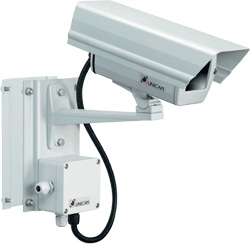
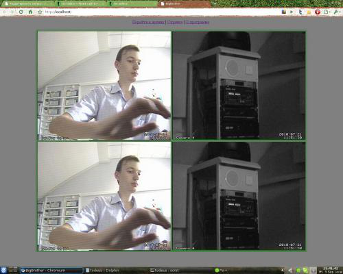

Видеонаблюдение в Linux
Ни для кого не секрет, что в наше время все следят друг за другом. Нет, не стоит пугаться, это не правительство и не инопланетяне(В общем не стоит исключать и таких вариантов). Все гораздо проще. Практически в каждой коммерческой фирме или госконторе, а зачастую, в школах и университетах, начальство устанавливает охранные системы. Под охранными системами обычно считают Охранно-Пожарные Системы(ОПС), Системы Контроля Доступа(СКД) и Системы видеонаблюдения. Вот про последние мы сегодня с вами и поговорим.

Введение
Все существующие системы видеонаблюдения можно условно разделить на два лагеря: построенные на базе видеорегистраторов и построенные на базе компьютера. Если с видеорегистратором все понятно(Подключили к нему монитор пошире, камер побольше, посадили охранника посмышленее и система работает), то с системой на базе компьютера(видеосервера) все немного сложнее. Во-первых нужно определиться с операционной системой под которой всё это будет работать, во-вторых нужно выбрать тот или иной программный продукт который и будет записывать интересные моменты из жизни офиса ну и в-третьих нужно купить компьютер и платы видеозахвата(в случае если используются аналоговые камеры).
Казалось бы, что вариант с видеорегистратором куда проще и доступнее, и, возможно, для небольших офисов/магазинов это самый лучший вариант, но что делать если нужно организовать систему по принципу – сидит охранник и мониторит 30 камер в 30-ти помещениях большого торгового центра, сидит начальник охраны и смотрит чего же делают охранники в его отсутствие, директор наблюдает за тем как работают его подчиненные(включая начальника охраны и секретаршу Машу которая любит сидеть в «Одноклассниках»), тем временем Генеральный Директор сидит дома и время от времени смотрит как работают люди в 4-ех его магазинах и 5-ти офисах, ну и наконец за всеми этими людьми следит Самый Главный Человек… – Системный Адмиистратор. Тут уже одним простым видеорегистратором не обойтись, нужно ставить(и не один) видеосервер способный отдавать картинку с камер по сети с разграничением прав и пользователей.
Выбираем
Во-первых нужно выбрать ОС. Как видно из названия статьи я рекомендую использовать Linux, по-тому что:
1. Это выгодно. Не нужно платить за лицензию на каждый сервер и удаленный компьютер наблюдения.
2. Это надежно. Правильно настроенный сервер на Linux’е будет служить вам верой и правдой не один год.
Во-вторых нужно выбрать программный продукт для регистрации видео.
Здесь кроется еще один плюс выбранной операционной системы. Дело в том что многие из существующих систем видеонаблюдения под линукс распространяются бесплатно(Будь то ZoneMinder, Motion или LinuxDVR(до 4ех камер в системе)), в то время как аналогичные системы под «другие ОС» стоят порядка 50-ти тысяч рублей(в зависимости от предполагаемого количества камер и количества компьютеров и серверов работающих в системе).
История успеха
Для себя я выбрал Motion.
Motion представляет из себя простую консольную программку со встроенным веб-сервером выводящим по указанному порту в формате MJPEG видеопоток с устройства video4linux(/dev/video*). Кроме того motion имеет встроенную систему регистрации движений в поле зрения камеры. Т.е. на диск пишется не все видео в режиме 24/7, а только тогда когда камера «видит», что что-то происходит, что существенно экономит место на диске и увеличивает максимальное время записи полезной информации на диск(В прочем, если нужно, то можно включить и постоянную запись).
Настройка
Настройка motion происходит через конфигурационный файл который по умолчанию расположен здесь:
/etc/motion/motion.conf
Про все пункты в этом файле вы можете прочитать в комманде man motion или же найти в гугле(благо в интернете информации по этому пакету достаточно), но пару пунктов из этого файлика я бы хотел выделить.
control_port 8080
control_localhost off
control_html_output on
control_authentication user:password
В этих четырех строках описан способ доступа к Web GUI настройки motion. В первой строке указан порт по которому нужно будет постучаться чтобы попасть в GUI, во второй строке разрешается/запрещается доступ к админке с адресов отличных от localhost’a(127.0.0.1), ну и в четвертой параметры авторизации(логин: пароль) для доступа к админке.
В админке есть все пункты настройки motion(даже те которые не прописаны в конфигурационном файле – стоят значения по умолчанию), с их кратким описанием.
Кроме того конфигурационные файлы очень удобно разбивать на «модули». Т.е. Основные настройки для всей системе хранить в файле /etc/motion/motion.conf, а настройки для каждой камеры хранить в отдельном файле, который потом можно будет подключить к основному файлу командой thread
Вот так у меня выглядит конфигурационный файл для системы с четыремя камерами:
/etc/motion/motion.conf:
framerate 15
ffmpeg_cap_new on
ffmpeg_cap_motion off
ffmpeg_timelapse 0
ffmpeg_timelapse_mode daily
ffmpeg_bps 400000
ffmpeg_variable_bitrate 0
ffmpeg_video_codec ffv1 #Вот тут мы выбираем кодек которым мы будем сохранять видео
ffmpeg_deinterlace off
max_mpeg_time 600
text_right %Y-%m-%d\n%T
text_changes off
text_event %Y%m%d%H%M%S
text_double off
snapshot_filename %v-%Y%m%d%H%M%S-snapshot
jpeg_filename %v-%Y%m%d%H%M%S-%q
movie_filename %Y.%m.%d/%H:%M:%S
timelapse_filename %Y%m%d-timelapse
output_normal off
webcam_quality 50
webcam_motion off
webcam_maxrate 50
webcam_localhost off
webcam_limit 0
control_port 8080
control_localhost off
control_html_output on
control_authentication user:password
quiet on
thread /etc/motion/thread1.conf
thread /etc/motion/thread2.conf
thread /etc/motion/thread3.conf
thread /etc/motion/thread4.conf
Жирным выделил 4 файла настроек для каждой камеры. Вот один из них:
/etc/motion/thread1.conf:
#Выбираем видеосутройство(Карта видеозахвата)
videodevice /dev/video0
#Выбираем номер канала
input 1
#Выбираем normid( PAL-DK, SECAM, etc. в зависимости от вашей камеры )
norm 3
#Вот тут самое интересное – порт на который будет транслироваться видеопоток в формате mjpeg
webcam_port 8081
#Текст который будет выводиться в левом нижнем углу картинки(Сюда можно название камеры написать)
text_left = «Camera Color»
#Директория куда будет сохраняться записанный видеоматериал
target_dir /opt/lampp/htdocs/bigbrother/Camera 1/
Интерфейс
Ну систему мы настроили и запустили. Камеры регистрируют любое движение и записывают все происходящее в специально подготовленную директорию. Остался один маленький вопрос. Куда смотреть чтобы в режиме реального времени следить за происходящим то? Помните строчку в конфигах webcam_port 8081? Вот если в адресной строке браузера зайти по адресу localhost:8081, то мы и увидим картинку с камеры в режиме реалтайм. Как видите ни о каком интерфейсе разговора нет. Можно конечно оставить все как есть. И для каждой камеры открывать отдельное окно браузера со своим портом. Но ведь гораздо приятней(да и удобней) видеть все в одном окне, как тут:

Тут то нам на помощь и придут базовые знания в html(а на HTML5, CSS3, JQuery, etc. можно нарисовать интерфейс который не будет уступать небраузерным клиентам). Делаем табличку втыкаем туда 4 тега , в качестве параметра src указываем localhost:8081, и любой бразуер будет показывать видеопоток в формате MJPEG.
Да, такая система требует небольших познаний в html, но в итоге получается очень гибкой и легконастраиваемой. Вот код моего рабочего примера на 4 камеры(см. скрин выше):
<html>
<head>
<title>BigBrother</title>
<META content=»text/html; charset=utf-8″ http-equiv=Content-Type>
<style></style>
</head>
<body bgcolor=gray>
<center>
<a href=»bigbrother»>Перейти к архиву</a> | <a href=#>Справка</a> | <a href=#>О программе</a>
<table border=1 bordercolor=green width=80%>
<tr>
<td width=50%>
<img src=»http://192.168.10.56:8081» width=100%>
</td>
<td width=50%>
<img src=»http://192.168.10.56:8082» width=100%>
</td>
</tr>
<tr>
<td width=50%>
<img src=»http://192.168.10.56:8083» width=100%>
</td>
<td width=50%>
<img src=»http://192.168.10.56:8084» width=100%>
</td>
</tr>
</table>
</center>
</body>
</html>
Кроме того, если все камеры подключены к серверу, а наблюдение ведется с удаленного компьютера, не совсем удобно добираться к записанному видеоматериалу. Нужно либо идти к серверу с флешкой(что совсем неправильно), либо поднимать ftp-сервер с авторизацией, либо написать еще один небольшой скрипт на php который будет следить за появление новых роликов и отдавать их клиентам. Тут уже решать вам самим. Для себя я выбрал последний вариант, потому-что его можно безболезненно встроить в интерфейс, он прост в понимании для охранников и позволяет им не отрываясь от своего любимого дела(Наблюдением за нарушителями на охраняемой ими территории), не закрывая интерфейса программы скачивать с сервера файл за тот или иной период записи.